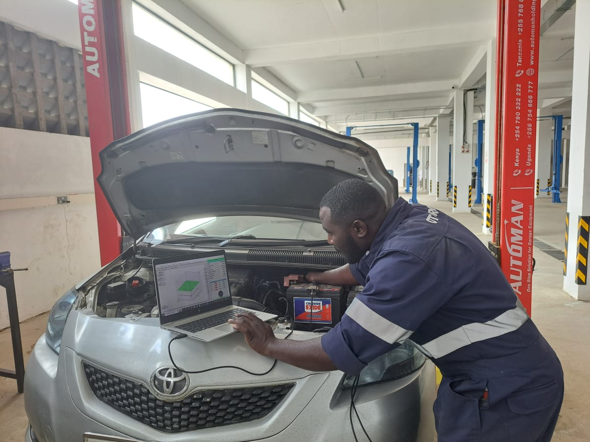

About Otodrive Mavoko, Thika & Jomvu Yard
Built for
the road.
Otodrive is among the largest LPG marketers in Kenya. In partnership with global leading providers such as Westport Fuels (Italy) and LPGTech (Poland) of Autogas Systems, we are licensed by KEBS to convert gasoline-powered vehicles to run on LPG under our brand, OTODRIVE. Our product conforms to Energy Policy and Regulatory Authority, Kenya Bureau of Standards, and National Environmental Management Authority requirements.

01 / Why Otodrive
Quality you can
keep driving on.
We offer high quality, affordable Autogas products with warranty. Otodrive is distinguished by a combination of innovative thought and continuous improvement of automobile technology. We are KS compliant, have a state-of-the-art workshop and our engineers are certified.
- Licensed
- KEBS certifiedLicensed to convert gasoline-powered vehicles to run on LPG under the OTODRIVE brand.
- System partners
- Westport FuelsItaly · Autogas systems
- System partners
- LPGTechPoland · Autogas systems
- Compliance
- EPRA · KEBS · NEMAOur product conforms to Energy Policy and Regulatory Authority, Kenya Bureau of Standards, and National Environmental Management Authority requirements.
- Workshop
- Certified engineersA state-of-the-art workshop with the technical team behind every conversion.
- Conversion centres
- Mavoko, Thika & Jomvu YardThree Otodrive Autogas conversion centres, with LPG fueling across the wider network.
02 / Service center
Elevate your experience to keep moving.
Otodrive is an authorized Autogas system installer. We are an innovative solutions leader using technology to ensure superior safety, high quality and excellence. From the first diagnosis to the finished conversion, the work is handled by a technical team that knows the system and the vehicle.
Our product range is backed by warranty and installed to meet the requirements of the Energy Policy and Regulatory Authority, Kenya Bureau of Standards, and National Environmental Management Authority.
See what we do03 / The work
Precision, not guesswork.
Every conversion starts with the vehicle, the system and the people who install it. Otodrive combines technical training, workshop discipline and real road testing. The result is a bi-fuel vehicle that keeps its everyday performance while adding the option of LPG.
From compact daily drivers to sedans and 4x4s, the workshop documents the vehicle, the system and the finish. The proof is in the projects and on the road.
See the project archive
Start here
Bring us
the vehicle.
Book a conversion at Mavoko, Thika or Jomvu Yard, or talk to the team about fueling, diagnosis and LPG system checks.